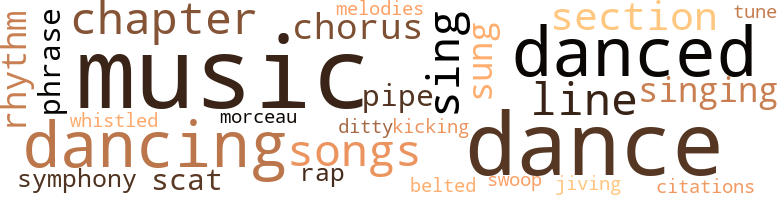
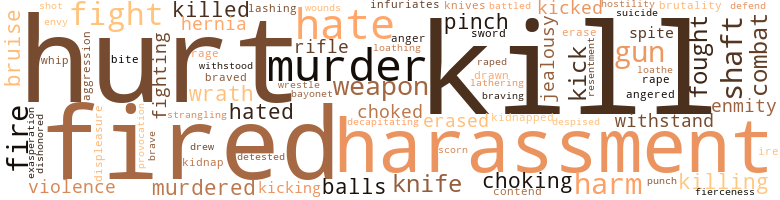
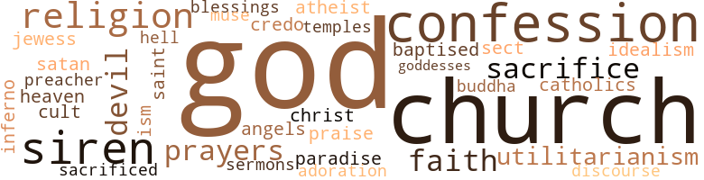

House Full of Brothers, by Palmer, Jon (1973)
109 music-related terms matched in this text.
Most frequent terms in this topic: music (16); dance (11); danced (7); dancing (6); sing (6)
belt_out.v.01
Definition: sing loudly and forcefully
| word | sentence |
|---|---|
| belted | H. David David asked shufling onto the porch in his slippers , belted robe and his stocking on his head . |
chapter.n.01
Definition: a subdivision of a written work; usually numbered and titled
| word | sentence |
|---|---|
| chapter | " Maybe he 's in the graduate chapter , " Diana said . |
| Chapter | The pledges were taken into the dining room where the Graduate Chapter had just finished eating . |
| Chapter | " Look at this , " said Big Brother Bobby , picking up a huge steak from the plate of one of ihe Graduate Chapter members who had left . |
| chapter | " It seems to me that we have waited too long in an - swering the indignities that the Man has inflicted upon us , and if those who are now in this fraternity had not been so silent , especially those in the graduate chapter , if they had not wanted to become white so badly that they forgot all that we pledge ourselves to , then we might have obviated many of the problems we now face . |
| chapter | That 's all I want to say on the subject , ex - cept that it will take more money than this chapter has ever had to buy a new house . |
| Chapter | " The Graduate Chapter 's buying a new house ! " |
chorus.n.01
Definition: any utterance produced simultaneously by a group
| word | sentence |
|---|---|
| chorus | A heavy cloud of smoke wafted above the heads of the sweating chorus of dancers and fluctuated in keep - ing with the music . |
| chorus | Big Brother Percy Bysshe Pruitt ran his gaze around the room to make sure Big Brother Barry was not there , and , not seeing him , led a chorus in laughing , then continued . |
| chorus | Each of the chorus of despondent ill-kempts bel - lowed his piteous cry . |
| chorus | They entered an old elevator which worked its way up to the sixth floor , sounding a chorus of disconcerting noises that seemed to warn the occupants of impending disaster . |
dance.n.01
Definition: an artistic form of nonverbal communication
| word | sentence |
|---|---|
| dance | The air was charged with hap - piness and zest , with the innate beauty of a misplaced African tribal dance . |
| dance | Suddenly something came to him that he had been incapable of noticing before this dance . |
| dance | Randall said , unconcerned and watching one of the girls dance . |
| dances | ' I ca n't do all these dances . |
dance.v.02
Definition: move in a pattern; usually to musical accompaniment; do or perform a dance
| word | sentence |
|---|---|
| dancing | He was dancing with Diana , and the symphony of their collaboration had curtailed the bands of unwarring tribesmen . |
| dancing | The group played whist for a while , but it was n't long before someone turned the stereo on , and they began dancing in the living room . |
| dancing | You 've been dancing so much you have n't seen all the attention she 's been giving you . |
dance.v.03
Definition: skip, leap, or move up and down or sideways
| word | sentence |
|---|---|
| danced | Steven took her hand and felt an electric dose of energy as it spread through the extremities of this lanky body , and they danced and danced until his clothes were soaking wet . |
| danced | Steven took her hand and felt an electric dose of energy as it spread through the extremities of this lanky body , and they danced and danced until his clothes were soaking wet . |
| dancing | The frat members had stopped dancing momentarily and were standing in groups of three 's and four 's when Diana and Steven descended the stairs . |
| danced | Even when he danced , Bowie looked as if he were in pain . |
| dance | The Big Brothers were very sensitive to this anomaly of a Negro being unable to dance or march , and they had accosted Bowie as soon as they returned from the Red Log Res - taurant . |
| dance | Someone had put a new stack of records on the stereo , and when the music started again , Steven asked the girl to dance . |
| dancing | And Steven forgot about his newfound job and college and the frat and Omaha until the music ended , and he and the girl , perspiring from the heat of their activity , joined the watchers as several couples began dancing again . |
| dancing | Four couples were dancing to music that was so loud the very founda - tion of the building seemed to shake . |
| dance | They would dance and sing to the early hours of the morning . |
| danced | Steven watched her as she danced and saw something in her he had never seen in a Negress before . |
| dance | But why did n't she dance like Diana , he wondered . |
| dance | " Would you care to dance ? " |
| danced | Steven observed her skin while they danced . |
| danced | Her eyes devoured the sparkle that danced in his , and as was often the case , she wished they were in his bedroom , listening to Miles Davis . |
| dance | " And Sandra said to me , ' Do n't dance too close . |
| dance | Now the girls would be able to dance more wildly , especially once Weed and his clan arrived . |
| dance | We just want to come in and dance awhile . " |
| danced | He glanced again at Ran - dall , whose eyes were following a girl as she danced around the room , a girl Steven was soon to know as Diana . |
ditty.n.01
Definition: a short simple song (or the words of a poem intended to be sung)
| word | sentence |
|---|---|
| ditty | This ai n't no ditty bop party . |
jive.v.01
Definition: dance to jive music; dance the jive
| word | sentence |
|---|---|
| jiving | And from what my nose has been telling me , he ai n't jiving , " Press added . |
kick.v.04
Definition: kick a leg up
| word | sentence |
|---|---|
| kicking | They conned the girls into giving them head and short lays for one and two dollars , some even fifty cents , but after the deals were made and the two went off to another room upstairs , those who were anxiously awaiting their turn stormed up the stairs and started kicking the door in . |
morceau.n.01
Definition: a short literary or musical composition
| word | sentence |
|---|---|
| morceau | They showed interest in every morceau , stopping after each forkful to comment on its delicacy of flavor , case of cut or method of preparation . |
music.n.01
Definition: an artistic form of auditory communication incorporating instrumental or vocal tones in a structured and continuous manner
| word | sentence |
|---|---|
| music | Bowie 's body bounced to the music of the stereo as he headed towards the living room shaking Weed 's drink . |
| music | A heavy cloud of smoke wafted above the heads of the sweating chorus of dancers and fluctuated in keep - ing with the music . |
| music | Along the sidewalk , a wealth of soaring palm trees gave a magnificent air of tropical affluence to the street , and he smiled as he watched the trees swaying with the graceful motion quite in contrast to the throb - bing , relentless beat of the music that blared from the fraternity house . |
| music | Someone had put a new stack of records on the stereo , and when the music started again , Steven asked the girl to dance . |
| music | " Do n't they have any music in Missouri , Bowie ? " |
| music | He forgot all about Diana as he watched Judy 's body move with the intricate rhythms of the music ; hips pulsing with the beat , breasts bouncing deli - ciously , their nipples , responding to the friction of her dress material , nicely erect . |
| music | And Steven forgot about his newfound job and college and the frat and Omaha until the music ended , and he and the girl , perspiring from the heat of their activity , joined the watchers as several couples began dancing again . |
| music | " What 's happening , Bro ? " he shouted above the music . |
| music | Four couples were dancing to music that was so loud the very founda - tion of the building seemed to shake . |
| music | With the raspy scratching of the needle across the grooves , the music stopped and the dancers froze in position , looking around to see what had happened . |
| music | " How about some music ? " |
| music | " Everybody out here just arrived from somewhere , " Randall said as the music began playing again . |
| music | H. David David and Press awoke to the music of sizzling frying eggs - the Pied Piper of sizzling bacon - and to the shrill cries of Steven who stood in the hallway shouting . |
| music | The music stopped , and Randall finally took his eyes from Diana . |
| music | Steven was half a block from the fraternity house when he heard Afro-Cuban music blaring from its noble facade . |
| music | Being able to use his uncle 's name was supposed to make him confident , but the music was a greater help than anything his uncle had told him . |
phrase.n.02
Definition: a short musical passage
| word | sentence |
|---|---|
| phrases | I wonder the same things about you when you banter your stock words and phrases . |
| phrase | His coined phrase was , " If only I had been white . " |
| phrases | " I do n't understand where you get these corny phrases from . |
pipe.n.04
Definition: a tubular wind instrument
| word | sentence |
|---|---|
| pipe | A grocery store with a yellow light in the window and a pendulous sign swinging to and fro , a cleaners with steam squirting from a pipe which jetted out from the side , and a liquor store with its front windows pro- tected by a partially rolled awning - a quaint area in - vaded by eleven of the most scroungy , foul-mouthed , irreverent citizens that area had the displeasure of enter - taining . |
| pipe | Old Rich Walter was soon to graduate from L.A. State with a degree in psychology , but the pledges already had him pegged as a certain psychiatrist , espe - cially when he came to meetings in a jumpsuit and smoking a pipe . |
| pipes | Press turned the tap on and the pipes sputtered like a faulty engine . |
quotation.n.02
Definition: a passage or expression that is quoted or cited
| word | sentence |
|---|---|
| citations | Weed 's infamous driving record was remarkable considering the different types of citations he had accu - mulated . |
rap.n.05
Definition: genre of African-American music of the 1980s and 1990s in which rhyming lyrics are chanted to a musical accompaniment; several forms of rap have emerged
| word | sentence |
|---|---|
| rap | Dewey emptied his stomach grotesquely when - ever a Big Brother came to rap his knuckles on his chest for an encroachment of some petty rule . |
| rap | By the time his future supervisor had arrived , Steven and Mrs. Scofield had established a warm rap - port that did n't go unnoticed by Mr. Melvaney . |
rhythm.n.04
Definition: the arrangement of spoken words alternating stressed and unstressed elements
| word | sentence |
|---|---|
| rhythms | He forgot all about Diana as he watched Judy 's body move with the intricate rhythms of the music ; hips pulsing with the beat , breasts bouncing deli - ciously , their nipples , responding to the friction of her dress material , nicely erect . |
| rhythm | He was mesmerized by the rhythm of her bounce . |
| rhythm | Gus 's legs were rusty and full and had their own sense of rhythm as she walked from table to stove and back . |
| rhythm | His natural sense of timing gave him an incomprehensible authority of rhythm and balance . |
scat.n.01
Definition: singing jazz; the singer substitutes nonsense syllables for the words of the song and tries to sound like a musical instrument
| word | sentence |
|---|---|
| scat | You must lie awake at night and write down the silliest thoughts that come into your beautiful head , " Joice said glancing under the scat . |
| scat | He stooped down along the front , scat and ran his thick hairy arm beneath it . |
| scat | He watched her get out of the car and take her bag from the back scat . |
section.n.01
Definition: a self-contained part of a larger composition (written or musical)
| word | sentence |
|---|---|
| section | Each approached Steven as he stepped into her section , and he , in turn , declined their offerings . |
| section | There were no Negroes in that section of Los Angeles , and the fright he had re - ceived was something he was not likely to forget . |
| section | This was the second time he had ventured to the main business section of Los Angeles . |
| section | He thought this until he saw the buses servicing the Negro section of town . |
| section | It had been thirty years since the once-exclusive section had been the pride of the white city fathers . |
sing.v.02
Definition: produce tones with the voice
| word | sentence |
|---|---|
| sing | " The first group through does n't have to sing to Big Brother Barry 's girl . " |
| sing | While he dressed , he whistled some of the songs he had sung under duress , songs he would soon sing with a grand pleasure , a great and ineffable pleasure . |
| sung | After two hours in the room , having eaten and cried , sung and laughed , the Brothers came out and found the girls somewhat overcome by the alcohol they had con - sumed . |
| sing | They would dance and sing to the early hours of the morning . |
| sing | Just as Steven entered the poolroom , Brother Barry was saying goodbye , promising her that the pledges would sing to her the next time she came up to the house . |
| sing | The air was suffused with discor - dant melodies as the pledges were made to sing their songs . |
| sing | She was so ugly she was a legend in the fraternity , and the most unpleasant part about it was that Barry demanded that the pledges sing to her each time he escorted her to the house . |
singing.n.01
Definition: the act of singing vocal music
| word | sentence |
|---|---|
| singing | With flour covering their nigrescent , shaven heads , their gunny sacks on over their underwear and their nuts on fire , the long walk began in an orderly , regimen - tal fashion , out onto Harvard Street , then down to Adams Boulevard , marching and singing , " We 're on our way to Kappa Land , right back where we started from . " |
| singing | Heartened by the prospect of being able to enter school immediately , Steven walked home , singing to himself as he went . |
| Singing | Singing and marching , and without being told , the pledges went merrily down the road for almost two miles before they found a shopping center which had long since been closed . ' |
| singing | Those who were n't singing had their chests beat - en by stone knuckles and closed fists . |
song.n.01
Definition: a short musical composition with words
| word | sentence |
|---|---|
| songs | During this period , knowledge of the venerable body who founded the institution , cer - tain poems , " Invictus , If " and a church full of songs must be mastered not only correctly , but harmoniously . |
| songs | Steven 's group had been industrious in this respect and had composed four songs , much to the delight of the Big Brothers who claimed they relished being sung to . |
| songs | While he dressed , he whistled some of the songs he had sung under duress , songs he would soon sing with a grand pleasure , a great and ineffable pleasure . |
| songs | While he dressed , he whistled some of the songs he had sung under duress , songs he would soon sing with a grand pleasure , a great and ineffable pleasure . |
| songs | After the pinning ceremony , the Brothers all gathered round , and the songs began . |
| songs | The air was suffused with discor - dant melodies as the pledges were made to sing their songs . |
swoop.n.01
Definition: (music) rapid sliding up or down the musical scale
| word | sentence |
|---|---|
| swoop | He could swoop by and pick up Joice and be off to another part of the world in a matter of hours . |
symphony.n.01
Definition: a long and complex sonata for symphony orchestra
| word | sentence |
|---|---|
| symphony | He was dancing with Diana , and the symphony of their collaboration had curtailed the bands of unwarring tribesmen . |
| symphony | Steven would stop occasionally to taste the sweet symphony that emanated from beneath the bridge . |
tune.n.01
Definition: a succession of notes forming a distinctive sequence
| word | sentence |
|---|---|
| tune | Be - hind this anachronism , one could easily have believed there to be an empire builder of the early 1900 's who , having lived through the era when his irreclaimable for - tune had been made , had refused to abandon his empire to those young , dynamic individuals who were in their prime as he had once been . |
| line | Ne - groes have the habit of trusting the lightest among them , and since Steven was late , Gordon was next in line . |
| line | He stood tall and walked a straight line , and instead of seeing the lights of the cars on Crenshaw , he saw only what he had achieved and what was yet to be achieved . |
| line | And when the guard behind the glass wall narrowed his gaze to light the cigar , Anthony snatched the first stained bag out of line and tossed it onto the dolly , and , in almost the same move - ment , he also grabbed one of the bags that had been filled with checks and threw it on the dolly , too . |
| line | Or had one of the stackers or sorters tossed one of the bags into the wrong line ? |
| line | The last person in line stuffed the bills into a heavy gray sack . |
| melodies | The air was suffused with discor - dant melodies as the pledges were made to sing their songs . |
| line | " You will drop us a line ? " |
whistle.v.01
Definition: make whistling sounds
| word | sentence |
|---|---|
| whistled | While he dressed , he whistled some of the songs he had sung under duress , songs he would soon sing with a grand pleasure , a great and ineffable pleasure . |
whistle.v.05
Definition: make a whining, ringing, or whistling sound
| word | sentence |
|---|---|
| sung | Steven 's group had been industrious in this respect and had composed four songs , much to the delight of the Big Brothers who claimed they relished being sung to . |
| sung | While he dressed , he whistled some of the songs he had sung under duress , songs he would soon sing with a grand pleasure , a great and ineffable pleasure . |
| sung | Ofttimes the girls would be sung to . |
211 violence-related terms matched in this text.
Most frequent terms in this topic: hurt (13); kill (12); fired (9); murder (8); harassment (8)
abhor.v.01
Definition: find repugnant
| word | sentence |
|---|---|
| loathe | When Steven came back to the office after having picked up the deposits , he began the duties he had come to loathe . |
abhorrence.n.01
Definition: hate coupled with disgust
| word | sentence |
|---|---|
| loathing | Steven had only been in his new apartment a few days and , although he had tried desperately to entice Joice to come and spend the night , especially since they had her friend Sally as an excuse , she had not yet found the courage - her only reason being a loathing to face Press and H. David David the next morning . |
aggravation.n.01
Definition: an exasperated feeling of annoyance
| word | sentence |
|---|---|
| exasperation | " This damn child-support is killing me ! " he continued in exasperation . |
aggravation.n.02
Definition: unfriendly behavior that causes anger or resentment
| word | sentence |
|---|---|
| provocation | Although H. David David outweighed him by fifty pounds , Press had a mean streak in him that precluded H. David David 's ever getting too physical with him , re - gardless of the provocation . |
aggression.n.01
Definition: a disposition to behave aggressively
| word | sentence |
|---|---|
| aggression | His eyes held neither aggression nor brutality . |
anger.n.01
Definition: a strong emotion; a feeling that is oriented toward some real or supposed grievance
| word | sentence |
|---|---|
| anger | Big Brother Pruitt stepped up to Bowie and , with their noses almost touching , his face lost the anger of his frown . |
| ire | His language , rough as it was , was a very useful tool , for often he was at the brink of physical violence when the ire of Satan would flow from his mouth with a profound inven - tiveness . |
anger.v.02
Definition: become angry
| word | sentence |
|---|---|
| angered | The shouts came from all parts of the room , and angered bursts rent the somber , candle-lit room . |
battle.v.01
Definition: battle or contend against in or as if in a battle
| word | sentence |
|---|---|
| combat | Her husband began to see the threat of an invisible enemy , and yet how was he to combat this abstract foe . |
| combat | His car , his car 's insur - ance which was a monstrous sum in itself , his tuition to the many colleges and universities he attended - what could he possibly do to combat these matriarchal ma - nipulations ? |
| battled | He spun around a corner and headed back towards Los Angeles , turning so quickly that Steven was thrown against Weed as he battled with the wheel of the car . |
bayonet.n.01
Definition: a knife that can be fixed to the end of a rifle and used as a weapon
| word | sentence |
|---|---|
| bayonet | A bayonet in the miser - able belly of these bastards , Harold thought , the mag - gots streamed out onto the decaying uniforms . |
bruise.n.01
Definition: an injury that doesn't break the skin but results in some discoloration
| word | sentence |
|---|---|
| bruise | " Look at this bruise , " Oliver said in alarm . |
| bruises | Oliver lift - ed his gunny sack and showed his bruises as they trudged up the embankment . |
| bruise | " I 'll have a bruise there now , damn you . |
choking.n.02
Definition: the act of suffocating (someone) by constricting the windpipe
| word | sentence |
|---|---|
| strangling | Little Steven recoiled from her strangling hold , but he had never been one to retreat in the wake of danger and threats . |
contemn.v.01
Definition: look down on with disdain
| word | sentence |
|---|---|
| despised | How he hated and despised himself at this moment . |
| scorn | He was ashamed of what Joice might think of him for not com - ing to her rescue , but he kept his mouth shut in spite of the scorn he felt for Harold . |
contend.v.06
Definition: be engaged in a fight; carry on a fight
| word | sentence |
|---|---|
| contend | If one could stand the stench from rotting eggs which had congealed in the pledge 's head who happened to be standing next to him , or contend with the reeking breath blown in his face from a mouth that had consumed a dozen raw eggs , Mexican peppers , onions , hot sauce and vinegar , it was n't a bad place to be . |
decapitate.v.01
Definition: cut the head of
| word | sentence |
|---|---|
| decapitating | Just as he was about to start enjoying her , Sandra sat up , nearly decapitating Little Steven . |
defy.v.01
Definition: resist or confront with resistance
| word | sentence |
|---|---|
| withstood | Her facial features had withstood time , though , and her skin was tight and wrinkleless . |
| withstand | She did not feel that the foundation of their love was strong enough to withstand the pressure she would bring upon him if she left her husband , although she knew it would happen , and soon . |
| withstand | That pressure was too much to ask her to withstand . |
displeasure.n.01
Definition: the feeling of being displeased or annoyed or dissatisfied with someone or something
| word | sentence |
|---|---|
| displeasure | A grocery store with a yellow light in the window and a pendulous sign swinging to and fro , a cleaners with steam squirting from a pipe which jetted out from the side , and a liquor store with its front windows pro- tected by a partially rolled awning - a quaint area in - vaded by eleven of the most scroungy , foul-mouthed , irreverent citizens that area had the displeasure of enter - taining . |
draw.v.23
Definition: pull (a person) apart with four horses tied to his extremities, so as to execute him
| word | sentence |
|---|---|
| drawn | " I feel myself , " she continued as the tear escaped her eye and raced down her cheek , " being drawn to you , and I keep telling myself this ca n't happen . |
| drew | The long flashy Cadillacs , Phaeton 's chariot in this stygian domain , drew up to the curb , and arms fluttered from their windows , beckoning to the girls stationed along the street , but Steven walked on , almost afraid to look back . |
envy.n.01
Definition: a feeling of grudging admiration and desire to have something that is possessed by another
| word | sentence |
|---|---|
| envy | Some looked with envy , others with disdain , then there were those whose eyes were stuck to the checks they had to balance . |
erase.v.01
Definition: remove from memory or existence
| word | sentence |
|---|---|
| erased | His excitement erased all hope of retaining any useful knowledge , and when the bell in the library signaled the end of the study period , it frightened a girl who was sitting next to him into spilling a bottle of ink which would have run over his clothes had it not been for the book he was reading . |
| erase | In a further effort to erase the damaging inadvertency of her plea , she said , " Okay , let 's take a bath . " |
| erased | Mrs. Scofield wanted to smile , but erased its traces quickly and turned to face Mr. Prescott . |
ferociousness.n.01
Definition: the trait of extreme cruelty
| word | sentence |
|---|---|
| brutality | His eyes held neither aggression nor brutality . |
ferocity.n.01
Definition: the property of being wild or turbulent
| word | sentence |
|---|---|
| fierceness | Press was taller than H. David David and shorter than the lanky Steven by some three inches , but his size bore no direct proportion to his fierceness . |
fight.n.02
Definition: the act of fighting; any contest or struggle
| word | sentence |
|---|---|
| combat | " We had just finished walking sixty miles , fought hand to hand combat with ten thousand gooks and won , so they decided to pay us our eight months back pay . |
| combat | He had not had the hand-to-hand combat that H. David David had , but everyone who met Press was cer - tain that had he been able to get his hands dirty with commie blood , the war would have been over much quicker . |
fight.n.05
Definition: a boxing or wrestling match
| word | sentence |
|---|---|
| fight | You had a fight and pushed him into the shaft . |
fight.v.02
Definition: fight against or resist strongly
| word | sentence |
|---|---|
| fighting | " I was away fighting for our coun - try , " Harold continued in a sad pitiful cadence , " and you took my wife . |
| fight | He was n't going to have to fight Harold ; that was for certain . |
| fought | Little Steven felt the world close in on him and fought to free himself . |
| fighting | Flashing lights from distant fire - fighting equipment animated the hillsides , while far off to both the east and west , it was as if there were no fire at all . |
| fought | " We had just finished walking sixty miles , fought hand to hand combat with ten thousand gooks and won , so they decided to pay us our eight months back pay . |
| fight | His color had thrown his hat into the ring , and he had no other recourse than to run , to beat , to fight . |
| fight | " Have to fight them off , do you , H. David ? " |
| defend | He was first being shown the blueprints for his own house , then a defend - ant in : Anthony , the former error-checker , Versus the State of California . |
| fight | Five or six policemen were dragging a new pris - oner to his cell , and the agonized man continued to scream and fight . |
| fought | Harold fought to break himself from this unwanted mo - ment of regression , to free himself from this animal in - side of him , this other human being who was trying to take over his life . |
| fought | I remember once asking him whose side he fought on during the Korean War , and he turned down my chance of getting a raise . " |
| fight | And I 'm going to stay here and fight until I find them . |
| fight | We 've got to stay and fight if we have faith in what we 're doing by going partially into the world of another color . |
flog.v.01
Definition: beat severely with a whip or rod
| word | sentence |
|---|---|
| lathering | Press found Steven 's eyes in the mirror where he was lathering his face . |
fury.n.01
Definition: a feeling of intense anger
| word | sentence |
|---|---|
| rage | Prescott said as his face filled with rage . |
gag.v.06
Definition: cause to retch or choke
| word | sentence |
|---|---|
| choking | A bed , whose brass ornaments had been painted white , and a chest of drawers , whose destiny had been decided by the same paint brush , was all that broke the choking dismalness of the wallpaper with its yellowed pattern of carriages and horses . |
| choking | Steven took the tiniest bite and felt an inferno of juices enflame his choking throat . |
| choked | His throat choked , closed and croaked as he re - joiced with those who had been hated for their cruelty . |
| choking | It was a choking , stilting , almost maligned middle-classness . |
| choked | The attend - ant coughed and choked from the almost paralyzing odor . |
gun.n.01
Definition: a weapon that discharges a missile at high velocity (especially from a metal tube or barrel)
| word | sentence |
|---|---|
| gun | If a black man treats them unjustly , they get a gun and shoot him , re - gardless what the consequences arc . |
| guns | I shall not . . . " He glanced from boy to boy , looking for sticks or clubs , guns or knives . |
| gun | The milkman did n't see the bill , and imagined what he saw to be a knife or zip gun , and he fell backwards fearfully . |
| guns | We 'll get us guns and see who 'll tear this building down ! " |
| guns | And while the attention of this body might natu - rally be stolen when one mentions rifles and guns and bullets and dying , it is nontheless a place to start talk - ing . " |
| gun | The guard rested his hand on his gun as Steven and Anthony inched forward . |
harassment.n.01
Definition: a feeling of intense annoyance caused by being tormented
| word | sentence |
|---|---|
| harassment | He could always count on her coming to work looking as if she had just stepped out of a tub , and what sweet memories the word tub surfaced through the jun - gle of trivia which was a constant harassment during the time he spent away from her . |
| harassment | The first day of Probation , that week of harassment that leads to induction into the fraternity , Steven went to work with a red string strung through a white button , and it was tied around his neck . |
| harassment | The girls who followed the pledges sought with an avid - ity which defies description ways of making the pledges tell of the harassment they had undergone . |
| harassment | The type of harassment in the march to the world famous Red Log Restaurant and the Cherry game continued in various degrees of acute - ness for another week . |
| harassment | The pledges came to the fra - ternity house for their harassment and , after the session was over , they were blindfolded , beaten and humiliated , then paddled more viciously than ever before . |
| harassment | All the wonderful moments of irrational harassment seeped into each man 's mind and brought with it a rush of tears which none could hold back . |
| harassment | Press was a legend in the fraternity , mainly for join - ing at twenty-seven and putting up with all kinds of harassment for which he really should have been too old . |
| harassment | Before the next stroke struck home , all the pledges looked away , knowing only too well that they would soon be the re - cipients of similar harassment . |
hate.v.01
Definition: dislike intensely; feel antipathy or aversion towards
| word | sentence |
|---|---|
| hate | He had been taught to hate Russians , and now he won - dered why . |
| hates | " He hates to come downtown . |
| hate | " Man , do I hate your old man , Vernon ! " |
| hated | His throat choked , closed and croaked as he re - joiced with those who had been hated for their cruelty . |
| hated | There were few things Steven hated more than bigots and cigar smoke , but hair curlers was one . |
| hate | " Steven , I want you to keep picking up those deposits because I know you must hate it as much as I hate hav - ing you here . |
| hate | " Steven , I want you to keep picking up those deposits because I know you must hate it as much as I hate hav - ing you here . |
| hated | How he hated and despised himself at this moment . |
| hates | Harold hates to have anyone dirty up his office . " |
| hates | Harold hates spades , from what I 've heard , and nobody would dare bring it up to his face . |
| detested | It was - amazing how like in tone some of the Big Brothers were to the white authority they detested . |
hernia.n.01
Definition: rupture in smooth muscle tissue through which a bodily structure protrudes
| word | sentence |
|---|---|
| hernia | And if one had , I would have had a hernia trying to shit in his hand . " |
| hernia | " I do n't plan on getting a hernia here tonight , at least not for what they 're paying me , so could you hurry ? " |
hostility.n.01
Definition: a hostile (very unfriendly) disposition
| word | sentence |
|---|---|
| hostility | " I only see it as an act of hostility against your moth - er , and nothing that you 've done because you love me . " |
hostility.n.02
Definition: a state of deep-seated ill-will
| word | sentence |
|---|---|
| enmity | With enmity and an - tagonism confronting him , he swallowed and spoke to her reluctantly . |
| enmity | He was still dazed from the blatant enmity shown by Harold . |
infuriate.v.01
Definition: make furious
| word | sentence |
|---|---|
| infuriates | It infuriates me just to look at you . " |
injury.n.01
Definition: any physical damage to the body caused by violence or accident or fracture etc.
| word | sentence |
|---|---|
| harm | Steven asked , disguising the harm the statement did him . |
| hurt | Steven felt hurt that she could say it with such dis - dain , and thought her to be a veritable bitch at that mo - ment . |
| harm | He was certain the change would do her young body no harm . |
| harm | No harm intended . |
| hurt | And that hurt Press more than being stuck in the eye by a sharp stick , true Marine that he was . |
| harm | There was never any harm meant , no underlying edge . |
| harm | Would the guards be incensed and do him bodi - ly harm ? |
| hurt | Steven asked in a hurt tone . |
| harm | The pledge knew that better than a sound answer , a humorous reply could bring him no harm . |
jealousy.n.01
Definition: a feeling of jealous envy (especially of a rival)
| word | sentence |
|---|---|
| jealousy | Their clash over Steven developed into a rare case of mother-daughter jealousy . |
| jealousy | The jealousy brought with it an unbearable atmosphere of female competition . |
kick.v.04
Definition: kick a leg up
| word | sentence |
|---|---|
| kicking | They conned the girls into giving them head and short lays for one and two dollars , some even fifty cents , but after the deals were made and the two went off to another room upstairs , those who were anxiously awaiting their turn stormed up the stairs and started kicking the door in . |
kick_back.v.02
Definition: spring back, as from a forceful thrust
| word | sentence |
|---|---|
| kicks | Then she whispered , " He stays here whenever his wife kicks him out of the house . " |
| kicked | Joice kicked her shoes off and put her feet on the couch with her head in Steven 's lap . |
| kicked | I 'm getting kicked out because of all the noise we made during pledgehood . " |
| kicking | Now unless y' all want a good ass kicking , you 'd better haul ass . " |
| kick | " Do n't try to sneak out , " he continued , lowering his voice , " Or I 'll kick the living shit right out of you . " |
| kick | Steven went back to his bunk after one of the guards shouted at him , " Shut up , or I 'll come down there and kick the living shit out of you ! " |
| kick | " We just heard on the radio where that gray cat got arrested and , black , I 'm gon na kick the living shit right out of your white ass . " |
kidnap.v.01
Definition: take away to an undisclosed location against their will and usually in order to extract a ransom
| word | sentence |
|---|---|
| kidnapped | " Have you been kidnapped ? |
| Kidnap | Kidnap their children . |
kill.v.10
Definition: cause the death of, without intention
| word | sentence |
|---|---|
| kill | The pledges dove to Bowie 's aid with the same blind , dumb , instilled instinct that made Marines like Big Brother Press climb over a sand dune in the face of a pillbox of hysterical Chinese soldiers all trying to kill him . |
| kill | I 'd kill myself rather than end up like that . |
| kill | Would her husband return , Steven won - dered , and find him making love to his wife and kill him ? |
| Kill | Kill her ? |
| Kill | Kill them both ? |
| kill | " My mother will kill me for putting up with this . " |
| kill | " Planning to kill me , I 'll bet , " he said aloud , " but if I must , I must . " |
| killing | " Not without killing someone , " Steven said . |
| kill | " I love her because she 's my mother , but sometimes I think I 'd kill her if I had a weapon . |
| kill | He knew , as he did each time he dared to come to Joice 's house , that it would be that night her husband would come home unexpectedly early and kill him . |
| kills | How long do you think it will be before he searches me out and kills me ? " |
| killing | " This damn child-support is killing me ! " he continued in exasperation . |
| kill | If I ever find him , I 'll kill him ; I do n't care where it is . " |
| killing | The shots would ring out in every direction , killing everyone - Americans , Chinese - shit , any boy who happened to get in the way . |
| kill | Steven was impressed with the possibility of one day becoming wealthy and famous , neither of which oc - curred to either Weed or R.C. Another of Weed 's say - ings , " To be black and get ahead in this world , you either have to kill forty policemen and find yourself a heavy muthafuckin ' Jewish lawyer , become a movie ac - tor - and I ca n't read , so that 's out of the goddamn question - or be a preacher . |
| kill | " Well , if he did , whatever 's inside will kill it deader than shit , " Steven said . |
| killed | Of course , he tells everybody she was raped and killed . " |
| killed | If the elevator had been at the first floor , where it should have been , then surely Anthony would have been killed . |
| kill | " I want to kill someone every time I look at you , " Weed said . |
| killed | They 'll understand why I had to lie to the policemen and tell them that Steven had killed Anthony . |
killing.n.02
Definition: the act of terminating a life
| word | sentence |
|---|---|
| kill | You make him think about kill - ing someone too . " |
knife.n.02
Definition: a weapon with a handle and blade with a sharp point
| word | sentence |
|---|---|
| knives | I shall not . . . " He glanced from boy to boy , looking for sticks or clubs , guns or knives . |
| knife | The milkman did n't see the bill , and imagined what he saw to be a knife or zip gun , and he fell backwards fearfully . |
| knife | Sandra slammed the knife she was using into the sink , but her mother grabbed her by the arm before she could get out of the kitchen . |
| knife | In his comme d'habitude pose , Harold had his rubber-soled shoes propped up on the desk while he cleaned his fingers with a pock - et knife and scraped the blade of the knife on the edge of his desk . |
| knife | In his comme d'habitude pose , Harold had his rubber-soled shoes propped up on the desk while he cleaned his fingers with a pock - et knife and scraped the blade of the knife on the edge of his desk . |
malice.n.01
Definition: feeling a need to see others suffer
| word | sentence |
|---|---|
| spite | He was ashamed of what Joice might think of him for not com - ing to her rescue , but he kept his mouth shut in spite of the scorn he felt for Harold . |
| spite | There was a natural tint to her cheeks that an accomplished actress would have taken two hours to duplicate , and somehow she re - mained fresh and wholesome in spite of the pressure her job had subjected her to . |
murder.n.01
Definition: unlawful premeditated killing of a human being by a human being
| word | sentence |
|---|---|
| murder | But of the quartet , each began to nibble on the crumb of miscegenation , and they found it to be exhilarating , vivifying , invigorating , realizing there was a way to escape their murder of the specie . |
| murder | " What 's this about murder , officer ? " |
| murder | " We 're not sure what happened , but we do have a witness of an accident or a murder . |
| murder | Unzipping his briefcase , the lawyer took out a paper and said , " You 're being held on suspicion of robbery and suspicion of murder of the boy you worked with . |
| murder | Brother John Hancock Douglas , the lawyer , came to visit him the next day , and after having been told that he knew nothing whatsoever about any murder , or the whereabouts of Anthony or the money , the lawyer told him he would never go to jail , nor would there even be a trial if Anthony or the money were not found . |
| murder | Only Steven 's fingerprints on Anthony 's car linked him at all with the murder . |
| murder | There 's a little matter of one hundred thousand dollars that 's missing and a charge of robbery and murder hanging over my head . " |
| murder | " Meanwhile , I stay here and have a trial for rob - bery and murder . |
murder.v.01
Definition: kill intentionally and with premeditation
| word | sentence |
|---|---|
| murdered | Think of what beautiful pictures they could have splashed across the front page of the newspapers if they found us murdered together . " |
| murdered | Instead of going to his apartment , Steven went straight to H. David David 's , from whom he had bor - rowed the car , with nothing more on his mind than being murdered by Joice 's husband , and slept soundly on a bed he was soon to call his own . |
| murdered | " He lost his rights when he murdered a boy at the bank . " |
musket_ball.n.01
Definition: a solid projectile that is shot by a musket
| word | sentence |
|---|---|
| balls | Would he be the one rack - ing balls in sleazy poolhalls ? |
| balls | I 'm telling you , blackie , you frosting my balls in a big way ! |
| balls | Shouts of , " Nigger , get your black ass off that table " came back to him , and a pic - ture of its originator , Small , the Negro who racked the balls at Tuxedo Billiards in Omaha , gave nostalgia a foothold in his festering thoughts . |
open_fire.v.01
Definition: start firing a weapon
| word | sentence |
|---|---|
| fired | You 'll get us both fired , of course . " |
| fired | You could get me fired ! " |
| fired | " Walls , you 're not smart enough to get me fired , so forget it . |
| fire | " But do you really think Melvaney and Tubbs will fire the boy ? " |
| fire | " Yes , but he did n't fire the Negro women like you thought he would . " |
| fire | My reason - ing is that if Harold Tubbs thinks the young man is passing for white and subsequently finds out , he 's bound to fire the boy and then all you need do is step in , save the boy , and the board of directors is certain to okay Tubb 's dismissal . |
| fire | How he wished he could fire Steven . |
| fired | " If you 're fired , it 'll be because you 're an arrogant bastard ! |
| fired | " It may have been funny at the time , but how will it seem to you after you 're fired ? |
| fired | " Finley Prescott wants to get Harold fired . " |
| fire | So one day Harold calls her into his office and tells her he has to fire her . |
| fired | Anyway , Melvaney told her what was up , that unless she let him do dirty things to her , she would be fired . |
| fired | She told Harold that she was Prescott 's daughter and she would see that he and Melvaney were exposed and fired . |
| fired | Since then , Prescott 's been determined to get Harold fired - if it 's the last thing he does . |
| fire | " He already knows , but all he can do is fire me , " Ste - ven said , knowing the job meant more to him than he cared to say . |
pain.v.02
Definition: cause emotional anguish or make miserable
| word | sentence |
|---|---|
| hurt | " Deference , deference , as long as we show deference and stick together those muthafuckas cai n't hurt us . " |
| hurt | She knew saying that would hurt him , hurt him in a way he had never experienced , but her sobs persisted . |
| hurt | She knew saying that would hurt him , hurt him in a way he had never experienced , but her sobs persisted . |
| hurt | " Nothing got better , and each time we met , it became evident that the remote possibility of reconciliation was more fleeting than the previous time we saw each other ... " As far as Steven was concerned , her father was an ar - rogant slob , a misfit , a rotten sonofabitch , and he would have said so had he not been afraid Joice 's feelings would have been hurt . |
| hurt | " I know Harold like the back of my hand , and he ca n't hurt me and he ca n't hurt you . |
| hurt | " I know Harold like the back of my hand , and he ca n't hurt me and he ca n't hurt you . |
| hurt | That would hurt me more than anything you could ever do . |
| hurt | " I doubt it , " Steven said in jest , but Joice was hurt by his saying it . |
| hurt | Many of the night clubs on Washington would be closing soon and there would always be the rowdies , the drunken and the belligerents who would have to be quelled before someone was hurt or dis - turbed . |
| hurt | " I 've come to the conclusion that if I stepped in front of a bus , it would hurt my body . |
pinch.n.02
Definition: an injury resulting from getting some body part squeezed
| word | sentence |
|---|---|
| pinch | It gets all my energies that should rightfully belong to a man , " she said pinch - ing Steven affectionately in the side . |
| pinch | Like the chord progression in a popular fugue , Gus could get her spices without looking , sprinkle them gen - erously or by the pinch , while stirring to another beat above another flame . |
| pinch | Diana laughed and gave Steven a pinch on the arm . |
punch.n.01
Definition: (boxing) a blow with the fist
| word | sentence |
|---|---|
| punch | Anthony stepped back quickly and threw a punch which hit Harold a glancing blow on the side of the head . |
rape.v.01
Definition: force (someone) to have sex against their will
| word | sentence |
|---|---|
| Rape | Rape their wives and daughters if they do n't pay up . |
| raped | Of course , he tells everybody she was raped and killed . " |
| dishonored | Have I so dishonored them that they will turn their backs on me now ? |
resentment.n.01
Definition: a feeling of deep and bitter anger and ill-will
| word | sentence |
|---|---|
| resentment | " Are you ... I mean , do you ... ? " she asked unable to formulate the question that would cause him the least resentment . |
rifle.n.01
Definition: a shoulder firearm with a long barrel and a rifled bore
| word | sentence |
|---|---|
| rifles | And while the attention of this body might natu - rally be stolen when one mentions rifles and guns and bullets and dying , it is nontheless a place to start talk - ing . " |
| rifle | You know how those insane Marines are , anything they ca n't do and hold a rifle in one hand is unnecessary . |
shoot.v.02
Definition: kill by firing a missile
| word | sentence |
|---|---|
| shot | They did n't know whether they were going to freeze to death or get shot by one of their own men . |
spear.n.01
Definition: a long pointed rod used as a tool or weapon
| word | sentence |
|---|---|
| shaft | Anthony , who happened to walk by and see him standing before the elevator shaft , altered his route and came to Steven 's side . |
| shaft | He knew too that the bolts which stuck up through the top of the elevator would serve to keep the bag in position as the elevator jerked up and down and bounced against the walls of the elevator shaft . |
| shaft | He cursed himself for taking the money from the elevator shaft . |
| shaft | After Harold thought Steven had left , he peered down into the elevator shaft , not knowing that at that very minute Steven was looking up at him from his position on top of the elevator . |
| shaft | One of my employees has fallen down an elevator shaft . " |
| shaft | I did n't push , trip or throw him down the elevator shaft . |
sting.n.03
Definition: a painful wound caused by the thrust of an insect's stinger into skin
| word | sentence |
|---|---|
| bite | Steven took the tiniest bite and felt an inferno of juices enflame his choking throat . |
suicide.n.01
Definition: the act of killing yourself
| word | sentence |
|---|---|
| suicide | I 'm so crushed I 'll either have to commit suicide by stepping in front of a bus , or ride to school with Brother Weed - he really is insane , you know - . |
sword.n.01
Definition: a cutting or thrusting weapon that has a long metal blade and a hilt with a hand guard
| word | sentence |
|---|---|
| sword | The honor in having a paddle broken over a pledge 's ass rivaled that of the German noble - men having their faces scarred by another 's sword . |
violence.n.01
Definition: an act of aggression (as one against a person who resists)
| word | sentence |
|---|---|
| violence | His language , rough as it was , was a very useful tool , for often he was at the brink of physical violence when the ire of Satan would flow from his mouth with a profound inven - tiveness . |
| violence | An angry young man , as he was known around the fraternity , Weed would always propose violence in a situation which R.C. and Steven would attack problematically , tactfully and logically , but lastly pugilistically . |
weapon.n.01
Definition: any instrument or instrumentality used in fighting or hunting
| word | sentence |
|---|---|
| weapons | Whenever the police stopped what was purported to be a violator , and often with no excuse for doing so , they would search for weapons , dope and sto - len goods , and if one were the least bit put out by it all and voiced his disapproval in the form of resistance , off to jail he went ; the reason was incidental . |
| weapons | He could see no weapons . |
| weapons | " We did n't have any weapons , only the flour and eggs which were in the kitchen and which were sup - posed to last us until next month . " |
| weapon | " I love her because she 's my mother , but sometimes I think I 'd kill her if I had a weapon . |
| weapon | Not wanting to be on the end of that rather devastating weapon again , Steven moved to a spot in the kitchen where he could not be seen . |
weather.v.01
Definition: face and withstand with courage
| word | sentence |
|---|---|
| braved | Hav - ing braved the initial shock , he took a long swig and waited motionless for a second while the pledges watched in dreaded silence . |
| braving | " Yes , I 'm braving your husband 's return . " |
| brave | " Why do n't you come off the porch , and we 'll see how fucking brave you are , Jack ? " |
whip.v.04
Definition: strike as if by whipping
| word | sentence |
|---|---|
| lashing | " Which brings to mind , muthafucka , who is this gray chick you been lashing ? " asked Sam . |
worst.v.01
Definition: defeat thoroughly
| word | sentence |
|---|---|
| whip | " When I get to be a Big Brother , I 'll whip so much ass I 'll be a legend in my own time . |
wound.n.01
Definition: an injury to living tissue (especially an injury involving a cut or break in the skin)
| word | sentence |
|---|---|
| wounds | Weed 's next remark stabbed Steven at a time when his unseen wounds were crying for attention . |
wrath.n.01
Definition: intense anger (usually on an epic scale)
| word | sentence |
|---|---|
| wrath | Righting himself , he found the four of them laughing and , although there was an ache in his side from falling , he much preferred seeing them laugh than facing the solemnity of their wrath . |
| wrath | There was a thunderous " Boy ! " that announced their arrival and that was quickly followed by the sound of scurrying feet signaling the pledges ' attempt to miss the wrath of the group . |
| wrath | And if one failed to memorize this material , the wrath of God and an entire fraternity house full of Brothers would descend subtly upon those who had for - gotten . |
wrestle.v.01
Definition: combat to overcome an opposing tendency or force
| word | sentence |
|---|---|
| wrestle | Steven could be adventurous and fondle her bulg - ing , protuberant breasts or play with her wet corolla and she could Indian wrestle with Little Steven , but it all had to be done surreptitously , clandestinely . |
75 religion-related terms matched in this text.
Most frequent terms in this topic: God (11); confession (6); church (5); siren (4); Church (4)
atheist.n.01
Definition: someone who denies the existence of god
| word | sentence |
|---|---|
| atheist | His disregard for religious instruction was no doubt her reason for being such a religiously unemo - tional atheist . |
baptize.v.01
Definition: administer baptism to
| word | sentence |
|---|---|
| baptised | Joice walked seductively back and forth in front of him , naked as the day she was baptised . |
blessing.n.05
Definition: the act of praying for divine protection
| word | sentence |
|---|---|
| blessings | Those were the times I knew South Korea could damn well go to the North Koreans and Chinese with my blessings . " |
buddha.n.02
Definition: one who has achieved a state of perfect enlightenment
| word | sentence |
|---|---|
| Buddha | He poured the scented liquid into four demitasses as Press sat down across from Steven , his legs crossed and his arms folded like a black Buddha . |
catholic.n.01
Definition: a member of a Catholic church
| word | sentence |
|---|---|
| Catholics | " You know , " he stupidly expounded once , " The Catholics know less about their religion than any other sect . " |
church.n.02
Definition: a place for public (especially Christian) worship
| word | sentence |
|---|---|
| church | During this period , knowledge of the venerable body who founded the institution , cer - tain poems , " Invictus , If " and a church full of songs must be mastered not only correctly , but harmoniously . |
| church | The apartment building was situated just below the crest of a hill , in the shadow of a ghastly new church . |
church.n.04
Definition: the body of people who attend or belong to a particular local church
| word | sentence |
|---|---|
| church | Vernon 's father had turned the heater on , and all the pledges promised themselves un - faithfully to go to church since their prayers had been answered . |
| Church | It 's the Church , Steven , and it 's made me the most mixed up person in the world . |
| Church | Be - tween the Church and my mother , I feel I 'm not too far from going mad . |
| Church | Sandra told her mother repeatedly , and often in front of Steven , that for her mother to get married would solve all the problems they were having , but her mother was torn between the chastity the Church de - manded of her and the undeniable premarital sexual re - lations she would have to take part in when sinking her claws into a new find . |
| Church | He saw that familiar but infrequent show of determination which meant Sandra had momentarily risen above the oppressive , overpowering fear she and her mother lived with day in and day out , the fear of the reprisals of God and the Church . |
| church | The church had been constructed with little thought for the conveyance of beauty , but rather with an American propensity for economy . |
| church | Other members of the Frat were given the " go " and launched themselves on the long and expensive voyage through a sea of domestic difficulties , and on to Sandra 's heart , the key of which was held by the Catholic church and which would be given only when her sacraments had been allotted their due . |
confession.n.05
Definition: the document that spells out the belief system of a given church (especially the Reformation churches of the 16th century)
| word | sentence |
|---|---|
| confessions | Neither felt any guilt after the confessions they had made . |
| confession | He began his sexual proceedings recon - ciled that they would end in the same cul-de-sac , that of Sandra telling him how difficult it would be for her to go to confession if she let him continue . |
| confession | The thought saddened him beyond all measure , and he could feel whatever held him together melt under Sandra 's confession . |
| confession | " Well , it 's I who has to go to confession Saturday ! " |
| confession | " Oh fuck your confession ! " |
| confession | Again the moment for his confession had been stolen from him by something so deep-rooted that it took the dire thought of going to jail for Weed to ex - pose it to him . |
| confession | " Well , I have a confession to make , Little Brother . |
creed.n.01
Definition: any system of principles or beliefs
| word | sentence |
|---|---|
| credo | The pledges stood by , taking it all in , hoping that once they had been made and perhaps graduated , that they would not be numbered among those who had for - gotten the credo of the fraternity . |
cult.n.03
Definition: followers of an unorthodox, extremist, or false religion or sect who often live outside of conventional society under the direction of a charismatic leader
| word | sentence |
|---|---|
| cult | If anything , it makes it more diffi - cult . " |
doctrine.n.01
Definition: a belief (or system of beliefs) accepted as authoritative by some group or school
| word | sentence |
|---|---|
| ism | Dewey 's act had a more calming if not thwarting effect on their sad - ism than a well-thought-out retaliatory gesture . |
eden.n.01
Definition: any place of complete bliss and delight and peace
| word | sentence |
|---|---|
| Heaven | Get up , for Heaven 's sake ! " |
| paradise | Past the roses and carnations , the birds of paradise and finally she stood before him , out of breath , her breasts continuing to rise and fall with each breath she took . |
god.n.03
Definition: a man of such superior qualities that he seems like a deity to other people
| word | sentence |
|---|---|
| Gods | " Out of the night that covers me , black as a pit from head to toe , I thank whatever Gods may be for my fuliginous soul . " |
| God | And then he might as well give his soul to God , because his ass will surely belong to us . |
| God | Asking God why he had put him in a place , in a world where he was the only inhabitant . |
| God | But Steven 's God was not a silent God . |
| God | But Steven 's God was not a silent God . |
| God | His God was not a fatalist . |
| God | His God told him to go forth and to forget the self-wrought tears that trickled down his cheeks . |
| God | His God told him to set his goals for greatness and to pur - sue them with all the vigor he could muster , and that the greatness that he was bound to achieve would create a world for him . |
| God | He saw that familiar but infrequent show of determination which meant Sandra had momentarily risen above the oppressive , overpowering fear she and her mother lived with day in and day out , the fear of the reprisals of God and the Church . |
| God | Did n't God give you a cunt like the rest of the women in this world ? ' " |
| God | When H. David David beat around the bush instead of describing what Gus looked like , Steven and Press knew they were in for one of God 's creatures . |
| god | Behind a partition of glass , obviously bullet - proof , one of the guards watched over the operation like a distant and uninterested god . |
| God | And if one failed to memorize this material , the wrath of God and an entire fraternity house full of Brothers would descend subtly upon those who had for - gotten . |
goddess.n.01
Definition: a female deity
| word | sentence |
|---|---|
| goddesses | They missed out not having black goddesses . |
hell.n.01
Definition: any place of pain and turmoil
| word | sentence |
|---|---|
| hell | " What in the hell were you doing up there ? " |
hell.n.03
Definition: (Christianity) the abode of Satan and the forces of evil; where sinners suffer eternal punishment; - John Milton; ; -Dr. Johnson
| word | sentence |
|---|---|
| inferno | Steven took the tiniest bite and felt an inferno of juices enflame his choking throat . |
idealism.n.01
Definition: (philosophy) the philosophical theory that ideas are the only reality
| word | sentence |
|---|---|
| idealism | She filled him so full of her bourgeois idealism that Steven enrolled in five classes , but as he became aware of what a puppet he had become , he slowly dropped his classes until he had but one left . |
jewess.n.01
Definition: a woman who is a Jew
| word | sentence |
|---|---|
| Jewess | So incredibly different would she be than his young , innocent Jewess . |
messiah.n.01
Definition: any expected deliverer
| word | sentence |
|---|---|
| Christ | Tubby was the only one of whom he was afraid , but luckily the office had been so inundated with checks by the rush of buying which leads to Christ - mas , that he and Harold had not had time for personal confrontation , and the incident with Joice was forgot - ten . |
muse.n.01
Definition: in ancient Greek mythology any of 9 daughters of Zeus and Mnemosyne; protector of an art or science
| word | sentence |
|---|---|
| muse | To change clothes and take a shower , to eat and muse , but the end of the first day had brought no visitors . |
praise.n.02
Definition: offering words of homage as an act of worship
| word | sentence |
|---|---|
| praise | The praise he received stemmed from a deep appreciation of the intellectual and cultural strides he had taken to im - prove his education , diction and manners . |
prayer.n.01
Definition: the act of communicating with a deity (especially as a petition or in adoration or contrition or thanksgiving)
| word | sentence |
|---|---|
| prayers | Vernon 's father had turned the heater on , and all the pledges promised themselves un - faithfully to go to church since their prayers had been answered . |
| prayers | Steven had sent prayers which had asked that Joice wait , and she had . |
preacher.n.01
Definition: someone whose occupation is preaching the gospel
| word | sentence |
|---|---|
| preacher | Steven was impressed with the possibility of one day becoming wealthy and famous , neither of which oc - curred to either Weed or R.C. Another of Weed 's say - ings , " To be black and get ahead in this world , you either have to kill forty policemen and find yourself a heavy muthafuckin ' Jewish lawyer , become a movie ac - tor - and I ca n't read , so that 's out of the goddamn question - or be a preacher . |
religion.n.01
Definition: a strong belief in a supernatural power or powers that control human destiny
| word | sentence |
|---|---|
| faith | Have you no faith in the forces of human nature ? " |
| religion | As much at odds as Steven was with Sandra and her mother regarding the question of religion , he did , on several occasions , attend mass with them . |
| religion | " You know , " he stupidly expounded once , " The Catholics know less about their religion than any other sect . " |
| religion | The parties given by those associated with the frater - nity were attended as religiously as if the fraternity were a religion of the stature of Christian Science . |
| faith | We 've got to stay and fight if we have faith in what we 're doing by going partially into the world of another color . |
sacrifice.v.04
Definition: make a sacrifice of; in religious rituals
| word | sentence |
|---|---|
| sacrifice | " Enough to want to sacrifice everything you 've built for eight years . " |
| sacrificed | To be late to work , not showing up , to work but a few hours a day , pay no in - come tax - these were sure to be sacrificed if he ven - tured into the common market of white-collar workers . |
| sacrifice | Steven and Press were willing to sacrifice their egos , and both nodded their heads vigorously . |
saint.n.02
Definition: person of exceptional holiness
| word | sentence |
|---|---|
| Saint | And Sandra swore a thousand times on each patron Saint 's head that she would never submit to such a compromising position again - know - ing she would . |
| angels | It was just a little thing , but it took the edge off of Steven 's high regard for the city of the angels . |
satan.n.01
Definition: (Judeo-Christian and Islamic religions) chief spirit of evil and adversary of God; tempter of mankind; master of Hell
| word | sentence |
|---|---|
| Satan | His language , rough as it was , was a very useful tool , for often he was at the brink of physical violence when the ire of Satan would flow from his mouth with a profound inven - tiveness . |
| devil | " The poor devil , " Joice said . |
| devil | Speak of the devil . |
sect.n.01
Definition: a subdivision of a larger religious group
| word | sentence |
|---|---|
| sect | " You know , " he stupidly expounded once , " The Catholics know less about their religion than any other sect . " |
sermon.n.01
Definition: an address of a religious nature (usually delivered during a church service)
| word | sentence |
|---|---|
| discourse | Joice was breathing fast and Steven wondered whether it was due to the speed at which they walked or the discourse they had had . |
sermon.n.02
Definition: a moralistic rebuke
| word | sentence |
|---|---|
| sermons | Those arguments that lead to sermons that I was telling you about , " Steven said . |
siren.n.01
Definition: a sea nymph (part woman and part bird) supposed to lure sailors to destruction on the rocks where the nymphs lived
| word | sentence |
|---|---|
| siren | The bourgeoise contestation for seats , the blast of the driver 's portable radio , the strain of the bus 's engine , the siren of a police car as it sped at a right angle to their destination , the tinkling of the coins as they fell noisily through the style of the collec - tion box - what could she be thinking , Steven asked himself . |
| siren | Just as Steven turned the corner off La Brea , the wailing sound of a siren came surging into his cars and his heart took immediate notice by pounding with such resonance that he could feel its throb in his neck and at his fingertips . |
| siren | Another siren whined past - an all too common oc - currence in this area - and Steven was again reminded of his plight . |
| siren | The patrol car had been set to come to a stop at the corner of La Cienega and Santa Barbara , but when they saw Weed 's car run the light , their siren came on and that powerful vacuum-cleaner varoooom sent them speeding after a smiling Weed . |
| sirens | The police drove up , sirens barking , lights flashing , whirling . |
temple.n.03
Definition: an edifice devoted to special or exalted purposes
| word | sentence |
|---|---|
| temples | She had a regal hairline far back on her head , and tiny curlets showered down her temples . |
utilitarianism.n.01
Definition: doctrine that the useful is the good; especially as elaborated by Jeremy Bentham and James Mill; the aim was said to be the greatest happiness for the greatest number
| word | sentence |
|---|---|
| utilitarianism | The instant they walked in the door , a waft of welcome beckoned them in , a welcome which tran - scended the utilitarianism of the mat outside . |
| utilitarianism | The building , however , was one that had survived the unbereaved death of poetry , purity and simplicity of design , but only because its interior was in keeping with the Wag - nerian march of efficacy and utilitarianism . |
worship.n.02
Definition: a feeling of profound love and admiration
| word | sentence |
|---|---|
| adoration | He had a silent adoration for Diana , one that Weed shared , as did almost everyone in the fraternity . |